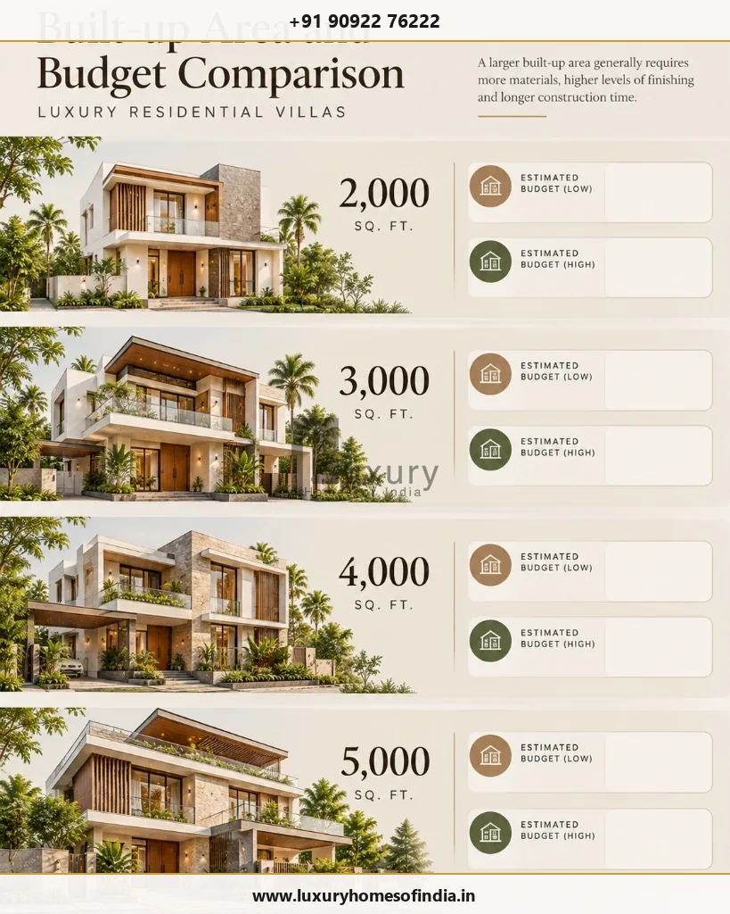
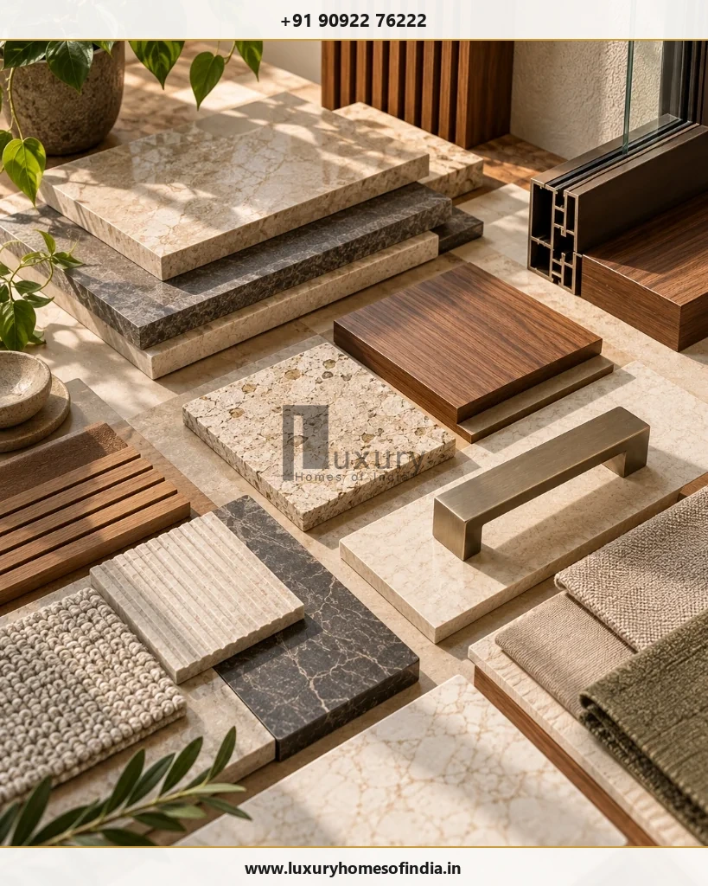
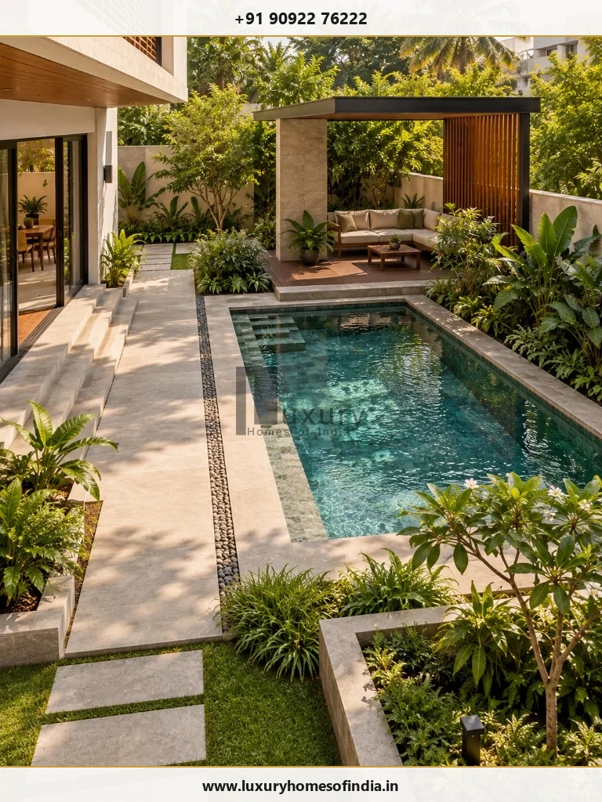
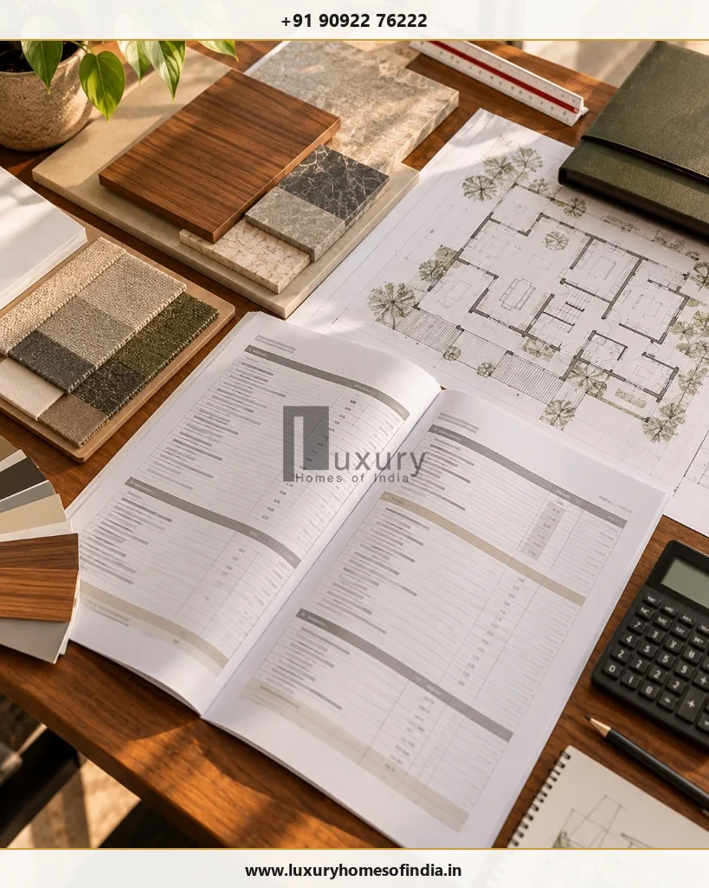

Building a luxury villa in Chennai requires a budget that accounts for more than the size of the house. Architecture, structural design, material specifications, fixed interiors, building services, outdoor works and site conditions all influence the final investment. The most useful starting point is to establish the built-up area, define the intended finish level and decide exactly what the construction contract will include. A per-square-foot rate can help with preliminary planning, but it cannot replace a project-specific estimate. This guide explains how to compare construction budgets, identify commonly overlooked expenses and prepare a detailed bill of quantities (BOQ) before committing to a luxury home project. It also covers Chennai-specific planning considerations and the questions to ask a construction company before signing an agreement.
1. What Is the Cost of Building a Luxury Villa in Chennai?
There is no single construction rate that applies to every luxury villa. Two homes with the same built-up area can have different budgets because of structural requirements, architectural complexity, finishes, interiors and specialist systems.
For an initial estimate, use this formula:
Indicative Base Construction Budget Formula
Indicative Base Construction Budget = Built-up Area × Applicable Construction Rate per Sq. Ft.
The draft's proposed market benchmark is ₹3,500–₹5,500+ per sq. ft. However, this range should be published as a current market reference only after its source, date and included scope have been independently checked. It is not an LHI quotation.
When comparing rates, establish whether the quoted scope includes:
- Foundation, structure and masonry: Deep soil piling/raft foundation, RCC frames, and solid blockwork.
- Plastering, waterproofing and specified finishes: Internal/external plastering, multi-layer terrace waterproofing, and wet area treatments.
- Plumbing and electrical installations: Concealed CPVC piping, solar hot-water lines, copper cabling, and DB distributions.
- Windows, doors, flooring and bathroom fittings: Double-glazed UPVC/aluminium systems, solid timber doors, marble/vitrified tiles, and premium sanitaryware.
- Fixed kitchen and wardrobe work: Modular cabinetry, quartz countertops, and built-in bedroom storage.
- Architectural and engineering fees: Master concept planning, structural calculation vetting, and MEP services schematics.
- Taxes, approvals and external development: GST, CMDA/GCC planning permissions, and statutory EB/water connections.
- Landscaping, automation, lifts or swimming pools: Perimeter greenery, smart lighting infrastructure, hydraulic/traction lifts, and outdoor recreational features.
An attractive headline rate may exclude important items. Compare quotations against the same drawings and specification rather than relying on the rate alone.
2. How Built-Up Area Affects Your Budget
The table below shows the arithmetic implications of the draft's proposed rate range. These figures are illustrative calculations, not verified market quotations or complete project budgets:
| Built-up Area | At ₹3,500/sq. ft. (Base Luxury) | At ₹5,500/sq. ft. (Bespoke Villa) |
|---|---|---|
| 2,000 sq. ft. | ₹70 lakh | ₹1.10 crore |
| 3,000 sq. ft. (Benchmark) | ₹1.05 crore | ₹1.65 crore |
| 4,000 sq. ft. | ₹1.40 crore | ₹2.20 crore |
| 5,000 sq. ft. | ₹1.75 crore | ₹2.75 crore |

These figures multiply the stated areas by the two example rates. They do not establish the actual cost of a villa in any particular Chennai neighbourhood.
Before using the figures for financial planning, confirm how built-up area is measured, what the rate includes and which expenses will be billed separately.
A useful estimate separates the core building from interiors, external development, specialist amenities, professional fees and other project expenses. This makes it easier to understand what drives the total rather than relying on one headline number.
3. Six Factors That Influence Luxury Villa Construction Cost
The cost of constructing a luxury villa in Chennai is driven by six fundamental design, engineering, and logistical elements:
1. Architectural design and structural requirements
Double-height spaces, large spans, cantilevered features, basements, feature staircases and extensive glazing can introduce additional design coordination, engineering and construction requirements.
The budget should reflect the approved architectural concept and structural design, not an assumption that every design feature can be accommodated at the same rate.
2. Materials and finishes
Natural stone, premium tiles, specialised coatings, high-performance windows and custom doors have different supply and installation requirements.
Compare specified products, grades, quantities, installation methods and replacement options. The word premium alone is not a sufficient material specification.

3. Interior design and fixed furniture
Kitchens, wardrobes, walk-in closets, built-in storage, decorative ceilings and custom joinery can form a substantial part of a luxury home's fit-out.
Determine whether these items are included in the base construction quotation or handled under a separate interior contract.
4. Electrical, plumbing and building services
Air-conditioning, lighting, hot-water systems, electrical distribution, network infrastructure and security systems should be coordinated with the architecture and interiors.
Early coordination can help identify equipment space, wiring routes and service requirements before finishes are installed.
5. Site conditions and access
Soil conditions, foundation requirements, plot levels, drainage, construction access and utility availability may affect the work required on a specific property.
Site investigation and professional design are necessary to establish the appropriate construction solution.
6. Outdoor spaces and specialist amenities
Swimming pools, landscaped gardens, driveways, boundary walls, outdoor kitchens, lifts and home automation should be specified separately when they fall outside the main contract.
4. What Additional Costs Should You Budget For?
The total project budget may include expenses that do not appear in a basic construction rate:
| Cost Category | Items to Confirm in Writing |
|---|---|
| Land and acquisition | Plot purchase, registration, stamp duty and related legal due diligence expenses. |
| Professional services | Architecture, structural engineering, MEP coordination and specialist interior/landscape consultants. |
| Permissions and charges | Applicable CMDA/GCC approvals, documentation, scrutiny fees and statutory deposits. |
| Site infrastructure | Underground sump water storage, storm drainage, borewell, EB transformer/utility connections and site levelling. |
| Boundary and external works | Compound wall, automated gates, vehicular driveway paving and external perimeter lighting. |
| Interior fit-out | Custom kitchen cabinetry, walk-in wardrobes, fixed furniture, false ceilings and decorative wall finishes. |
| Loose furnishings | Beds, sofas, dining tables, drapery/curtains, kitchen white goods, audio-visual gear and art accessories. |
| Specialist amenities | Swimming pool, residential elevator, centralized automation and outdoor gazebo/kitchen features. |
| Project-specific allowances | Applicable Goods and Services Tax (GST), contractual variation charges and prudent contingency reserves. |
Not every item applies to every villa, and some may already be included in the contractor's proposal.
Prepare a written inclusions-and-exclusions schedule to avoid omissions and double-counting. Record the party responsible for each item, its estimated cost and whether the figure is fixed, provisional or yet to be quoted.
5. How to Estimate the Cost of Luxury Amenities
Specialist amenities should have defined specifications and separate cost allowances wherever they are outside the core construction contract:

- Swimming pool: Define dimensions, construction method (guniting vs. poured RCC), multi-layer waterproofing, filtration plant room, circulation equipment, glass mosaic finishes and surrounding stone/timber deck.
- Home automation: List the functions required, such as smart lighting, motorized blinds, centralized HVAC control, security cameras and biometric access. Identify the equipment, bus-line wiring provisions and central rack location.
- Residential lift: Confirm capacity (3 to 6 passenger), travel height (G+1 or G+2), equipment requirements (gearless traction vs. hydraulic), shaft structural provisions, 3-phase power backup, installation and maintenance agreements.
- Landscaping: Define planting species, automated drip irrigation, low-voltage garden lighting, stone paving, perimeter decking, soil drainage and decorative water features.
- Custom interiors: Specify cabinetry substrates (HDHMR/marine ply), veneer/acrylic finishes, premium European hardware (Blum/Hettich), quartz countertops and specialized installation protocols.
Obtain comparable quotations for these items before finalising the total budget. If an amenity is deferred, identify any provisions that should be incorporated during the initial construction phase (such as conduits, structural slab depressions, and extra plumbing shafts).
6. Chennai-Specific Considerations When Planning a Luxury Villa
Constructing a luxury villa along Chennai's coastal plain requires careful regional adaptation:
Climate-responsive architecture
Consider orientation, shading, window placement, ventilation and appropriate glazing when developing the architectural design. The right choices depend on the plot, building form and comfort requirements in Chennai's hot-humid tropical climate.
Waterproofing and drainage
Terraces, balconies, bathrooms and other exposed or wet areas need appropriate detailing. Site levels and drainage should also be considered during planning to resist water ingress during severe Northeast monsoon downpours.
Foundation and soil conditions
Foundation design should follow suitable site investigation and structural engineering. High water tables near ECR/OMR or coastal sands require specialized pile or raft foundations. A generic per-square-foot rate cannot establish the foundation requirements of an individual property.
Material selection and maintenance
Choose finishes and building systems according to their exposure, intended use, maintenance requirements and replacement availability. Saline coastal air accelerates corrosion on untreated metals; marine-grade stainless steel (SS316) and anodized aluminium are strongly recommended.
Services coordination
Plan electrical routes, plumbing, equipment locations, access panels and automation infrastructure before finishing work begins.
These decisions should be reviewed by the relevant professionals against the actual site and approved design.
7. How to Prepare a More Reliable Construction Budget
A structured process can turn a broad estimate into a project-specific budget. Follow these 10 essential steps:

- Prepare a project brief: Record the intended built-up area, room requirements, lifestyle priorities and desired amenities.
- Confirm the site information: Establish plot dimensions, levels, access, utility availability and relevant geotechnical investigation requirements.
- Develop the design: Coordinate architectural, structural and building-services requirements into cohesive GFC (Good-For-Construction) drawings.
- Specify materials: Identify products, brands, grades, surface finishes and monetary allowances for major items.
- Prepare a detailed BOQ: Request itemized quantities, unit rates, clear inclusions and explicit exclusions for the agreed scope.
- Separate construction and interiors: Establish which fixed and loose furnishings are included in the civil turnkey package versus separate interior contracts.
- Obtain specialist quotations: Price optional amenities (pool, lift, home cinema, landscaping) and external works separately.
- Plan a contingency: Set a project-specific reserve based on design maturity, site risks and contractual exclusions. The draft's proposed 5–10% range is an assumption to evaluate, not a universal rule.
- Document the commercial terms: Confirm milestone payment schedules, variation pricing mechanisms, handover protocols and warranty periods.
- Review the budget as the design develops: Record changes and update quantities and cost allowances when specifications change.
A useful budget is a documented working estimate, not simply a single number. It should make clear what is known, what is provisional and what still needs a quotation.
8. How to Choose a Luxury Villa Construction Company
A construction partner should be assessed on scope clarity, technical coordination, quality controls and commercial transparency—not only on the lowest quoted rate.
Before signing an agreement, review:
- A detailed BOQ and written scope of work.
- Material specifications and approved substitutions.
- Structural design responsibilities.
- Waterproofing and quality-control procedures.
- Site supervision and progress reporting.
- Responsibility for approvals and specialist services.
- Payment milestones and the project schedule.
- The process for approving variations.
- Defects, handover documentation and maintenance responsibilities.
- Relevant project references that can be verified.
Ask shortlisted companies to price the same drawings and material schedule wherever possible. This makes the proposals easier to compare and helps reveal exclusions that might otherwise be overlooked.
9. Discuss Your Villa Construction Requirements With LHI
Luxury Homes of India provides residential construction-related services through its architectural, engineering, construction and interior offerings. The scope for an individual villa should be confirmed directly with the company.
For an initial discussion, prepare the plot details, proposed built-up area, floor configuration, preferred architectural style, material expectations and list of desired amenities.
These details help establish the work to be estimated and identify items that require separate specifications or quotations.
Initiate Your Luxury Villa Discussion
Connect with LHI's architectural and engineering directors to review your plot, drawings, and luxury finish allowances:
Frequently Asked Questions
Critical homeowner questions regarding luxury villa construction budgeting, scopes, and agreements in Chennai:
Plan Your Luxury Villa With a Clear Budget
The cost of building a luxury villa in Chennai depends on the design, construction scope, material selections, site requirements and amenities included in the project.
Start by defining your requirements, confirming the built-up area and preparing a detailed BOQ. Separate core construction from interiors, external works and specialist amenities, and verify every major cost allowance before committing to the project.
Planning a luxury villa in Chennai? Contact Luxury Homes of India to discuss your requirements and the appropriate next steps.
Luxury Homes of India
#85, 4th Floor, Lotus Tower, Guindy, Chennai – 600032
Budget note: All estimates should be validated against the actual site, design, specifications, taxes and contract inclusions or exclusions. Obtain a project-specific written estimate before making financial commitments.